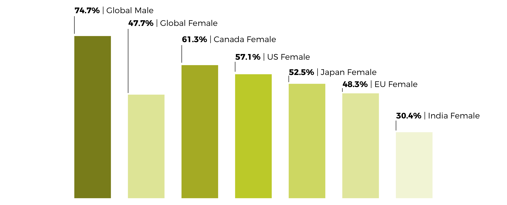
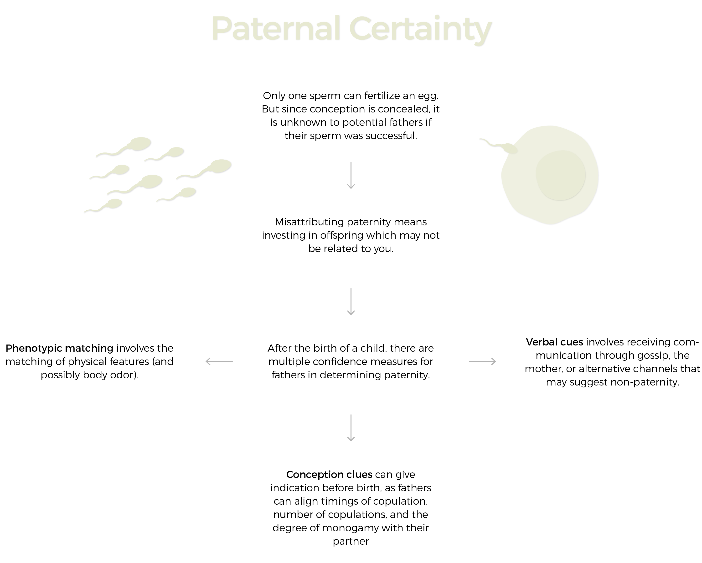

Fathers in cooperative societies
Cooperative breeding plays a common role throughout modern culture, where non-parents assist in childcare while parents tend to resource gathering or maintenance. As seen here, fathers generally take a diminished role in the direct care of their children. These data correlate with the original hunter-gatherer model that humanity employed through much of its history, for as females remain at the home caring for their children and farming low-risk sustinence, like vegetables, males worked to hunt high-risk foods, like large animals.
On the society level, two schools of thought exist to recognize the motivations behind this sexual division of labor:
The Provisioning Model
- Marriage establishes the family unit
- New opportunities for divsion of labor and parental investment
- Men's role of relationship is to provide calories
- Female's role is to look after children
The Signaling Model
- Hunting gives men opportunity to show off
- Hunting emphasizes genetic quality
- Killing big game attracts large audiences
- Potential mates receive signal
In industrialized societies, the concept of money or income replaces the concept of hunting. Less important is the role of physically gathering food or protecting the home from threats, thus the models shift. Division of labor still exists in the modern world, yet the lines between the sexes are more blurred. Today, this division of labor is best expressed by paid workforce participation. The following graph represents the proportion of each gender involved in the paid labor force in each country. What you will see is that while female participation is lower than male, a quantifiable portion of each female population works.

While these data do not differentiate between married or unmarried women, it more accurately shows the increasing role of women in the global economy.
Facing uncertainty
Just like mothers, fathers face the same issues in allocating time for work, social relationships, and their families. One of the unique components of human life history is the majority reliance on males for the gathering of nutrients for the family unit. In fact, natural selection favors male involvement through increased child wellbeing, even if the male is not physically present as much as the mother. Even so, half of American children live in a household without their father at some point in their lives. So why is male involvement in parenting as much of an issue that you are reading this webpage? One would think that males would want to tend to their offspring and nurture them to adulthood, and those people would not be wrong. However, men do care that they are, in fact, caring for their own child.
Paternal certainty is one biological reason perhaps leading to an intrinsic decrease in paternal investment:

Trouble in an expanding world
The expansion of civilization, economics, and infrastructure provides another scope through which to view declining paternal presence. As the world gets more expensive, the number of males with viable finances for supporting a family with children decreases. Accordingly, short-term partnerships through a child is conceived become more likely as fathers leave through fear of financial ruin. This trend is most apparent in younger families, where low wages make affording living arrangements difficult.
A second factor is geographic mobility. Because extended families now have the ability to live farther from each other, fathers often must step up to compensate for absent caregivers. Paired with typical case that fathers provide most of the financial resources, fathers in this situation face a greater tradeoff between providing more overhead or emotional support.
Fathers as guardians
Because infants rely on their mother's milk for sustenance in the earliest parts of their lives, the amount of time available for a father to bond with their child is often less than the mother. While mothers require external sources of sustenance, an infant needs only a mother. In collaborative breeding societies, mothers are surrounded by a host of individuals available to assist, yet the father is just one of these. If living in the same house, he often becomes the most important additional caregiver, but that is not always the case. Thus, as fathers seek to provide care for their infant, they often look to provide services that produce high returns on investment and that is not supplied by others.
Offering guardianship is an important service that fathers cross-culturally offer to their families and to their offspring. Again, while there is less of a requirement for fathers to be able to fend off animals from a domicile, modern fathers offer different protective services throughout the world. Some of these roles serve physical protection, yet others serve the education of his offspring to live safely or to increase their overall wellbeing: